![[Experimental]](figures/lifecycle-experimental.svg)
wjp_scatter() takes a data frame with one row per point and returns a
ggplot object with an x-y scatter chart following WJP style guidelines,
optionally split into side-by-side panels (facet). A subset of the points
can be highlighted and labeled, points with small samples can be drawn
hollow, and a linear trend line can be added to each panel.
Usage
wjp_scatter(
data,
x,
y,
labels = NULL,
facet = NULL,
highlight = NULL,
hollow = NULL,
colors = c("#482d8b", "#c4c4c4"),
point_size = 7,
trend = c("none", "lm"),
repel = TRUE,
seed = 1,
repel_args = list(),
point_stroke = 1.3,
label_size = 9.5,
label_fontface = "plain",
label_colour = NULL,
xlim = NULL,
ylim = NULL,
x_breaks = NULL,
y_breaks = NULL,
x_labels = NULL,
y_labels = NULL,
x_title = NULL,
y_title = NULL,
facet_nrow = 1,
strip_size = 11,
strip_fontface = "bold.italic",
strip_colour = NULL,
trend_color = "#9aa0a6",
trend_width = 0.75,
grid_color = "#eeeeee",
ptheme = WJP_theme()
)Arguments
- data
Data frame with one row per point.
- x, y
Strings. Column names of the horizontal and vertical values.
- labels
String. Column name of the point labels. Default is
NULL(no labels).- facet
String. Column name of the variable that splits the chart into panels, in order of its factor levels or first appearance. Default is
NULL(one panel).- highlight
Character vector of
labelsvalues to highlight. Default isNULL(all points highlighted).- hollow
String. Column name of a logical variable;
TRUEdraws the point as an open circle. Default isNULL.- colors
Character vector of length 2: color of the highlighted points and labels, and color of the other points. Default is the WJP violet and a light gray.
- point_size
Numeric. Diameter of the points, in points. Default is
7.- trend
String.
"none"(default) or"lm"(a dashed linear trend per panel).- repel
Logical. Repel labels with ggrepel when installed. Default is
TRUE.- seed
Integer. Seed of the label repulsion. Default is
1.- repel_args
Named list of further arguments for
ggrepel::geom_text_repel()(e.g.,box.padding,force). The search runs up tomax.iteriterations (max.time = 30seconds), so the layout does not depend on the speed of the machine.- point_stroke
Numeric. Outline width of hollow points, in points. Default is
1.3.- label_size
Numeric. Size of the point labels, in points. Default is
9.5.- label_fontface
String. Font face of the point labels. Default is
"plain". Weight faces such as"semibold"are accepted (seewjp_fonts()).- label_colour
String. Color of the point labels. Default is
NULL(the highlight color).- xlim, ylim
Numeric vectors of length 2 with the axis limits. Default is
NULL(range of the data).- x_breaks, y_breaks
Numeric vectors with the axis breaks. Default is
NULL(automatic).- x_labels, y_labels
Labels of the axis breaks: a character vector or a function (e.g.,
function(x) paste0(x, "%")). Default isNULL(automatic).- x_title, y_title
Strings. Axis titles. Default is
NULL(none).- facet_nrow
Integer. Number of rows of panels. Default is
1.- strip_size
Numeric. Size of the panel titles, in points. Default is
11.- strip_fontface
String. Font face of the panel titles. Default is
"bold.italic".- strip_colour
String. Color of the panel titles. Default is
NULL(the highlight color).- trend_color
String. Color of the trend line. Default is
"#9aa0a6".- trend_width
Numeric. Width of the trend line, in points. Default is
0.75.- grid_color
String. Color of the grid lines. Default is
"#eeeeee";NAremoves them.- ptheme
ggplot theme to apply. Default is
WJP_theme().
Details
Points with a missing x or y are not drawn. Highlighted points (highlight)
use the first color of colors and the rest use the second; when
highlight is NULL every point is highlighted. Labels (labels) are drawn
for the highlighted points only. With repel = TRUE and the ggrepel
package installed, labels are moved away from the points and from each
other with a fixed seed, so the layout is reproducible for a given figure
size; otherwise they are drawn just above their points.
Points flagged by the logical column hollow (for example, estimates based
on fewer than 30 observations) are drawn as open circles.
The trend (trend = "lm") is an ordinary least-squares line fitted to all
the drawn points of each panel, as ggplot2::geom_smooth() with
method = "lm" and no confidence band.
Sizes are given in points: point_size is the diameter of a point and
point_stroke the width of the outline of hollow points.
Examples
# Always load the WJP fonts
wjp_fonts()
# Prevalence and seriousness of problems by area (fictional data)
problems <- data.frame(
area = rep(c("Rural", "Urban"), each = 6),
category = rep(c("Consumer", "Housing", "Family", "Employment",
"Land", "Education"), 2),
prevalence = c(41, 9, 21, 18, 20, 9, 39, 10, 17, 19, 18, 9),
seriousness = c(4.6, 4.3, 5.5, 6.0, 4.5, 5.6, 4.8, 4.9, 5.6, 6.4, 5.2, 5.9),
n = c(215, 49, 99, 96, 105, 25, 480, 126, 210, 230, 211, 104)
)
problems$small <- problems$n < 30
wjp_scatter(
problems,
x = "prevalence",
y = "seriousness",
labels = "category",
facet = "area",
highlight = c("Consumer", "Housing", "Family"),
hollow = "small",
trend = "lm",
xlim = c(0, 50),
ylim = c(4, 8),
x_labels = function(x) paste0(x, "%"),
x_title = "Prevalence",
y_title = "Mean seriousness (0-10)"
)
